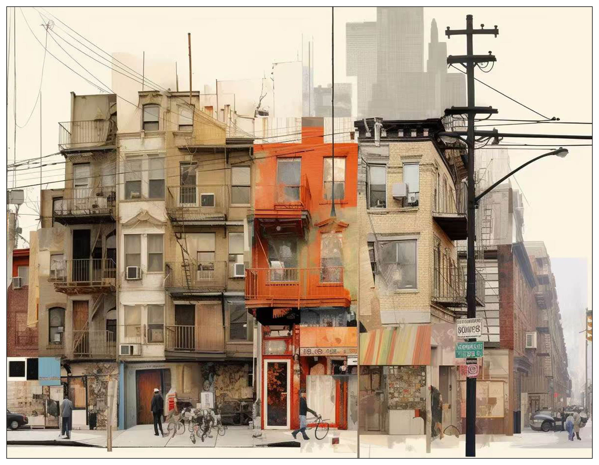
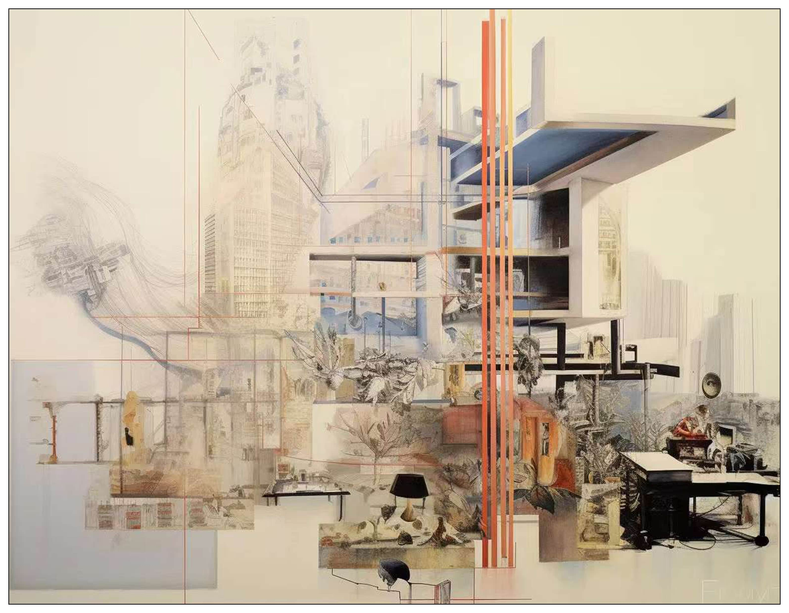
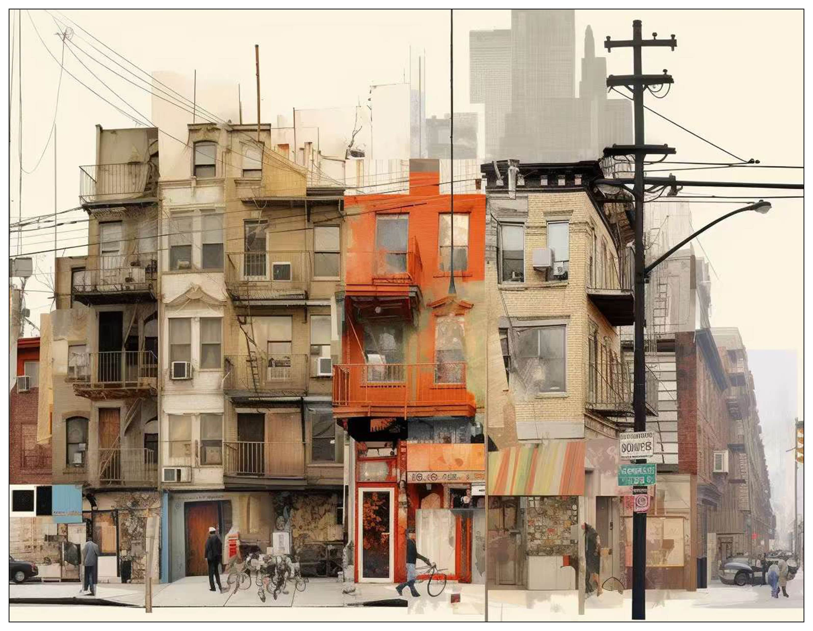
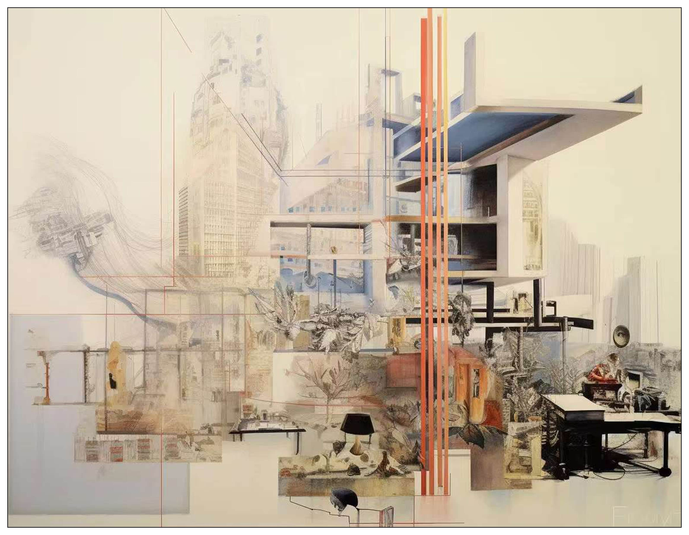
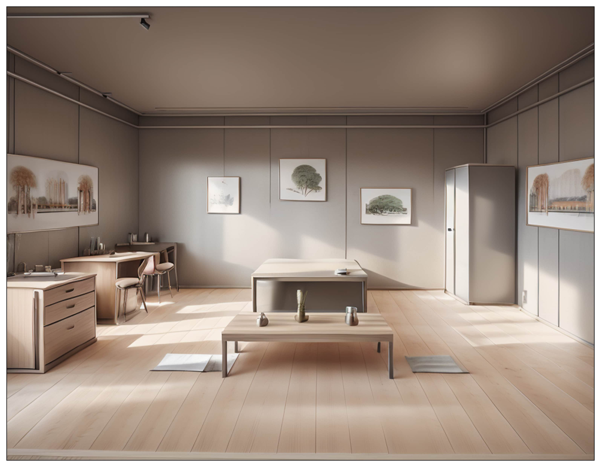
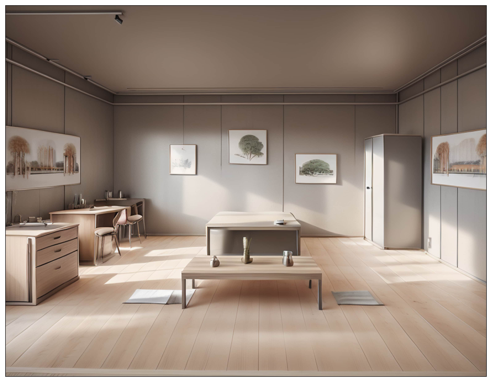
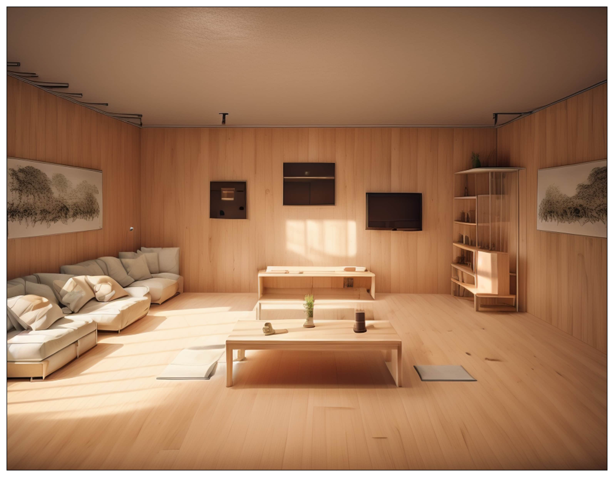
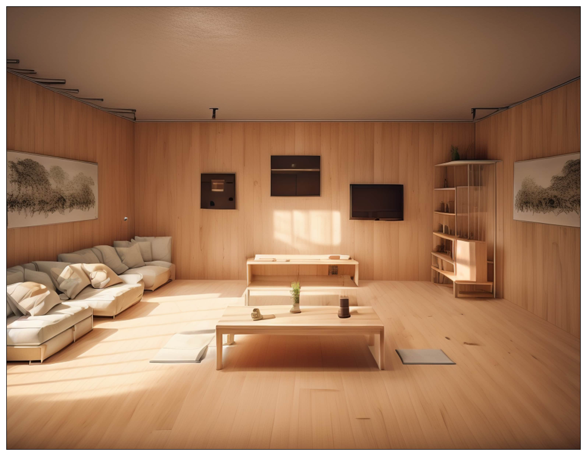
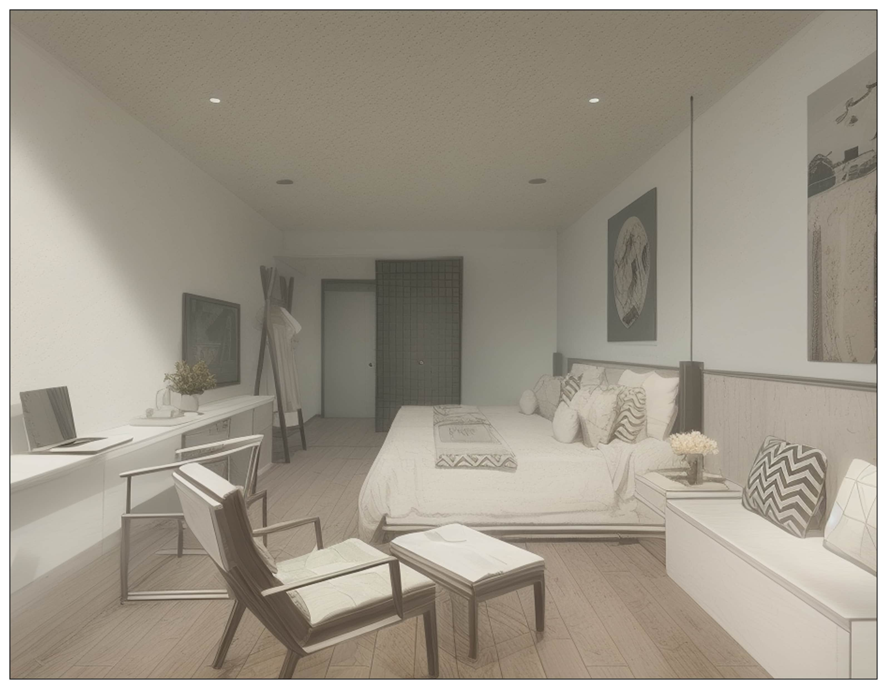

AI Use/Render Sample in Practice
In the past one year, for the first time, the rise of artificial intelligence technology give me the direct shock with my own life/career. There is no doubt in everyone's mind that this will change human life and ways of production in the future. But in fact, how to put AI technology into actual production is still a problem that puzzles most people now.
Here, I will show some of my thoughts and sample on the use of AI in architecture study/architectural design. I do believe such a techology is already mature enough to be an important part of architect's workflow to increase efficiency and provide inspiration.
 



 FIG.1. Architectural Collage of Shanghai, with Midjourney
FIG.1. Architectural Collage of Shanghai, with Midjourney
At the beginning of a research/design project, Midjourney could support amazing opportunity of brainstorming. In this step, the idea in our mind is usually hard to describe and indefinable. Midjourney could translate the language of architect/researcher into collage/image/drawing, which actually give us chance to break through the imagination.
 

 

 FIG.2. From Model to Conceptual/Vibe Rendering, with Stable Diffusion
FIG.2. From Model to Conceptual/Vibe Rendering, with Stable Diffusion
Comparing with traditional render tool, Stable Diffusion provides architects a very efficient way to develop conceptual design quickly. Here shows one interior design example of me from the block models in Sketchup to high quality renderings, which use very little time for architect to visualize their design. It is conceivable that this tool could save architects a lot of time and devote it to real design and thinking process.



 FIG.3. Infinite Possibilities of AI Rendering, with Stable Diffusion
FIG.3. Infinite Possibilities of AI Rendering, with Stable Diffusion
Due to its basic logic, the rendering by Stable Diffusion have infinite possibilities. This means it could provide architect thousands of rendering due to different Model and Lora. Here show a series of interior rending made by me of the same space.